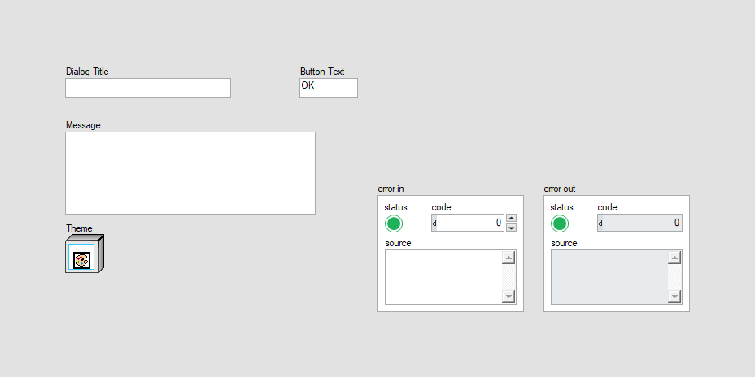
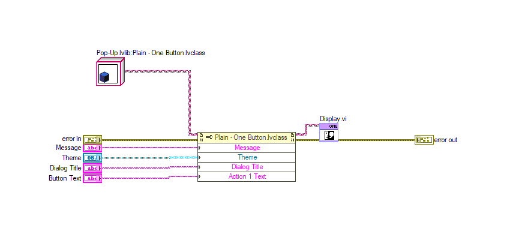
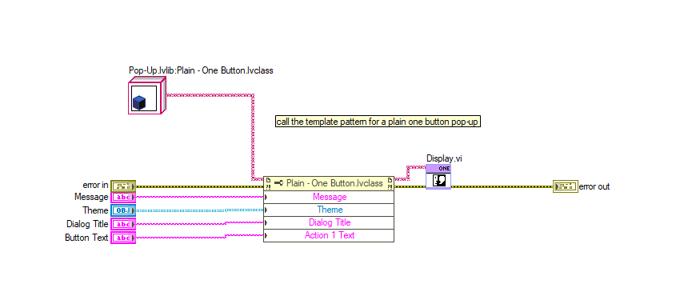
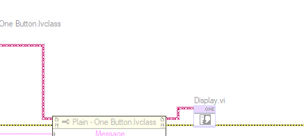
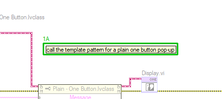

LabVIEW VI Comparison Report
7/13/2026 7:45:12 PM
First VI: C:\workspace-base\Plain\Plain - One Button\Display One Button Popup (Plain).viSecond VI: C:\workspace\Plain\Plain - One Button\Display One Button Popup (Plain).vi
| Front Panel Overview | ||

|
 | |
| Block Diagram Overview | ||
|
 |
 |
- Front Panel
- Front Panel Position/Size
- Block Diagram Functional
- Block Diagram Cosmetic
- VI Attribute
Detailed Information
1. Block Diagram objects
| C:\workspace-base\Plain\Plain - One Button\Display One Button Popup (Plain).vi | C:\workspace\Plain\Plain - One Button\Display One Button Popup (Plain).vi | |
|
 |
 |
- Label - added at (264,141)
2. VI Attribute - Documentation (VI Properties)
- description text : changed from "The one button popup will display information to the user and wait for the operator to click the button. Note: The function Close Pop-Up.vi can be used to close this dialog early. Note: The dialog vertical sizing will adjust for longer messages, so test all messages prior to deployment to make sure that scaling fits. Inputs: -Dialog Title [String] - String variable to populate the dialog's title bar -Message [String] - String variable to populate Display -Theme [lvclass] - the theme for the style of the popup -Button Text [String] - String variable for defining the text to show on the button Code Developed By: Daniel Coons Technology Service Corporation 1983 S Liberty Drive Bloomington, IN 47403 Phone: 812 558-7100 daniel.coons@tsc.com www.tsc.com/atcs" to "The one button popup will display information to the user and wait for the operator to click the button. Note: The function Close Pop-Up.vi can be used to close this dialog early. Note: The dialog vertical sizing will adjust for longer messages, so test all messages prior to deployment to make sure that scaling fits. Inputs: + -Dialog Title [String] - String variable to populate the dialog's title bar + -Message [String] - String variable to populate Display + -Theme [lvclass] - the theme for the style of the popup + -Button Text [String] - String variable for defining the text to show on the button + Code Developed By: + Daniel Coons + https://github.com/danielcoons/tsc-pop-up"
3. VI Attribute - Execution (VI Properties)
- Allow Debugging : changed from "enabled" to "disabled"